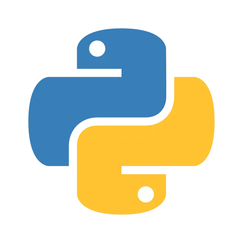
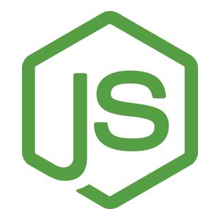
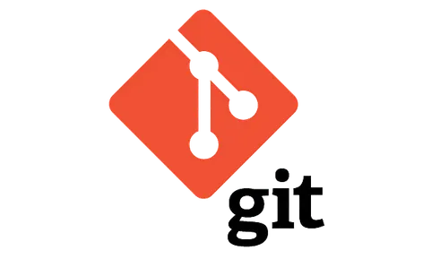

Dirección Avendaño, 49 04271 Lubrin / Telefono 690 113 251
E-mail marcos.alvarez.lopez@gmail.com / Linkedin linkedin.com/marcosalvarezlopez
Perfil Profesional
Ingeniero de Software con más de 10 años de experiencia en el desarrollo
de aplicaciones web y sistemas distribuidos. A lo largo de mi carrera he
trabajado en entornos tanto startup como corporativos, liderando equipos
técnicos y participando en todas las fases del ciclo de desarrollo
de software, desde el análisis de requerimientos hasta el despliegue
y mantenimiento en producción.
Especializado en el desarrollo backend con tecnologías como Python,
Node.js y bases de datos relacionales y no relacionales. Experto en
arquitecturas basadas en microservicios y entornos cloud
(principalmente AWS y Google Cloud), con un fuerte enfoque en
la automatización de procesos, CI/CD y buenas prácticas de testing y
documentación.
Destaco por mi capacidad de liderazgo técnico, comunicación efectiva
con equipos multidisciplinares, y orientación constante a la mejora
continua del rendimiento y escalabilidad de los sistemas. Considero
fundamental mantenerme actualizado en nuevas tecnologías y metodologías
ágiles, y disfruto aportando soluciones innovadoras a problemas
complejos.
Educación
- Grado en Ingeniería Informatica - Universidad de Sevilla (2006-2011)
Idiomas
|
Español (Nativo)
|
Inglés (C1)
|
Alemán (B1)
|
Habilidades Tecnicas
|
Python
|
Django
|
Node.js
|
Git
|
PostgreSQL
|
|  |
|
 |
 |
 |
Certificaciones
- AWS Certified Solutions Architect (2023)
- Scrum Master (2021)